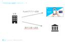

Kyash Product Blog
https://blog.kyash.co/
Kyash Product Blog
フィード

KyashのBtoB新事業 - 前編 - 法人送金の課題と我々が提供する価値について 1
1
Kyash Product Blog
株式会社Kyash法人送金事業部でリードエンジニアをしている北山です。 Kyashでは2015年の創業以来、支払いやお金の管理を簡単にするスマホアプリとそれに紐づくVisaプリペイドカードの提供を行ってきました。 表向きにはKyash = スマホアプリの会社としての顔が強いと思います。 しかし、実は2021年からKyashアプリ向けの企業送金ビジネスを行なっており、2024年1月からは銀行口座向けの送金ビジネスを開始していました。(以後、法人送金サービスと呼称します) 今回はサービス立ち上げ初期からエンジニアとして働く私が法人送金サービスの今をお伝えします。 法人送金サービス概要 法人送金サー…
5日前

ランチ手当をKyashで支給する運用を始めました
Kyash Product Blog
Kyash では 2024年12月 からランチ手当の支給を始めました。 物理出社を必須にしているわけではありませんが、出社するならメンバー同士でコミュニケーションを取ってもらいたいというメッセージを込めて、10,000円/月を上限として出社1回につきランチ手当2,000円を支給しています。 支給は翌月にKyashの送金で実行しています。 自分たちのプロダクトで福利厚生の制度を運用できる のはなかなか体験がよいので紹介したいと思います。
2ヶ月前
ヴィジョンの真価
Kyash Product Blog
この記事は Kyash Advent Calendar 2024 の25日目の記事です。今年もKyashのアドベントカレンダーの締めくくりとして、この場を借りてエントリーさせていただきます。今回のテーマは、Kyashが創業当初から大切にしているヴィジョンについてです。 ヴィジョンとは何なのか よく「あの起業家はヴィジョナリーだ」や「この会社にはヴィジョンがある」などと表現されることがあります。ヴィジョンがあることと、良いプロダクトや事業を作ることとはどのような関係があるのでしょうか。ヴィジョンは単なる理念やスローガンではなく、会社やプロダクトの方向性を形作る羅針盤であると思っています。私たちが…
5ヶ月前
Kyash Visaプリペイドカードって、チャージするのが手間だし、ちょっと面倒じゃない？？
Kyash Product Blog
Kyash COO の鳥越です*1。これは Kyash Advent Calendar 2024 24日目の記事です。 Kyashはチャージ型クレカ (Visaプリペイドカード) を提供していますが、カード利用する前にチャージするって面倒ですか？ 「普通のクレカはチャージしなくても使えるのに、使う前にチャージ残高を確認して残高が足りなかったらいちいちチャージするってちょっと面倒だし不便だなあ〜」といったユーザーの声もあります。一方で、「チャージ型クレカはちっとも手間ではなく、むしろ使い過ぎを防げるから安心」といったユーザーや、そもそもチャージ型クレカによってクレカを普段使いできるようになり、キ…
5ヶ月前
iOSアプリからKMPで定義したsuspend関数を呼ぶ
Kyash Product Blog
これは Kyash Advent Calendar 2024 の22日目の記事です。KyashでiOSアプリを開発している tamadon です。 Kyashのモバイルアプリ開発では KMP(Kotlin Multiplatform) を採用しています。「KMPとはなんぞや？」「KyashでKMPの構成は？」については以下の記事を御覧ください。 AndroidとiOSのエンジニアでKMPの実装をペアプロしている話 この記事で掲載している構成図を紹介します。新規でKMPを使用する画面はこの構成で実装しています。 KMPの採用を積極的に進めていった結果、既存の画面に機能を追加する際にReactor…
5ヶ月前
やさしい金融を作るための非常識な体験設計
Kyash Product Blog
この記事は Kyash Advent Calendar 2024 20日目の記事です。 Kyashでプロダクトマネージャー（と貸金業務取扱主任者）をしている Ueda です。 Kyashでは10月にスポットマネーという機能をリリースしました。 www.kyash.co 一般的な言葉で言うと「お金を借りる・貸す」サービスであり、こういった言葉を聞くだけで「うっ」となる方もいるのではないでしょうか。 今回はアドベントカレンダーという機会を通じて、本機能提供を担当した自分から「どういう背景と思いでスポットマネーリリースしたか」そして「Kyashが目指すやさしい金融とそのための非常識な体験設計」につい…
5ヶ月前
なぜKyashのモバイルチームは周りからいいチームだよねと言われるのか
Kyash Product Blog
この記事はKyash Advent Calendar 2024の19日目の記事です。 こんにちは。Kyashでモバイルエンジニアをしているkato(@ktc_eng)です。 Kyashのモバイルチームはありがたいことにいいチームだよね、仲が良いよねと社内の方々から評価していただくことが多い印象です。今回この記事ではなぜモバイルチームが社内にそのような印象を与えているのか、その秘訣は何なのかを言葉にしてみたいと思います。この種の記事は書き手がマネージャーであることがほとんどのように思いますが、これをメンバーが語ることで、よりリアルに雰囲気が伝わるといいなと願っています。 半期に一度の目標設定と振…
5ヶ月前
EM1年生の振り返り
Kyash Product Blog
これは Kyash Advent Calendar 2024 の17日目の記事です、こんにちは あるいは こんばんは。KyashでEngineering Managerをしている 牧山（@_rmakiyama）です。 2024年1月からEMのロールとなり、気づけばまるっと1年が経とうとしています。キャリアの中でEMを担うのは初めてです。 どんなロールでも、誰しも始めは1年生。RPGのように、ロールが変わるとステータスに変化があるような世界ではありません。 唯一の正解のないEMというロールに対し、とあるEMのセーブデータを覗いてもらえるよう、徒然なるままに振り返りを残しておこうと思います。 どう…
5ヶ月前
開発完了からリリースまでのリードタイム改善に挑戦した話
Kyash Product Blog
はじめに これは Kyash Advent Calendar 2024 の13日目の記事です。12日目は おもたに@k_omotani の 「銀行振込設計で考えていること」です。 こんにちは、 Kyashでモバイルエンジニアをしているnitakanです。 金融業界のスタートアップであるKyashでは、品質を担保しつつ、より迅速に価値を提供できる開発フローを目指しています。 開発プロジェクトにおいて、「開発完了からリリースまでのリードタイムが長い」という課題に直面したことはありませんか？ Kyashでもこの問題が存在しており、その改善策としてQAチームをプロジェクトチームに早期から参加してもらう…
5ヶ月前
DroidKaigi 2024 登壇の学び3選！
Kyash Product Blog
これは Kyash Advent Calendar 2024 11日目の記事です。 Kyash で Android エンジニアをしている高田(tfandkusu)です。2024年ももうすぐ終わりです。今年を振り返ると、potatotips #87 を始め、いくつかの LT イベントに登壇する機会がありましたが、一番大きい出来事は DroidKaigi 2024 での登壇です。発表した内容はこちらです。 2024.droidkaigi.jp この記事では、私が DroidKaigi 2024 の登壇を通じて得た学びを3点ご紹介します。一連の流れで登場する Kyash メンバーとの関わりを通じて、…
5ヶ月前
secのお仕事、ときどき沼る
Kyash Product Blog
これは [Kyash Advent Calendar 2024] の8日目の記事です。 Kyashで情報セキュリティを担当しているshimoyamaです。 もう１年が経ちますかぁという感じですが、この１年は何をしてきたんだろう？という思いもあり、少し振り返って見ようと思います。 情報セキュリティを生業としている人が全て同じことしている訳ではありませんが、どの様なことをしているのかはわかりそうなので、ご参考になればと。 外部認証の取得・準拠 www.kyash.co Kyashホームページを見て頂くと、一番下に『登録』という欄が凄く控えめに存在していますが、皆さんはご覧頂いていますでしょうか。 …
5ヶ月前
AML対策を即座に実行できるKyashの強み
Kyash Product Blog
Kyash で金融犯罪対策室室長をしているPecoです。 センシティブ情報山盛りな分野なのでどこまで話せるか（書けるのか）・・という部分もありかなり大雑把な箇所もあるかとは思いますが、せっかく Advent Calendar で記事を書くことになったので金融犯罪対策室からみたエンジニアサイドへのリスペクトを書いてみたいと思います。
5ヶ月前
リリーストレインの軌跡
Kyash Product Blog
これは Kyash Advent Calendar 2024 の2日目の記事です、こんにちは あるいは こんばんは。Kyashでエンジニアリングマネージャーをしている 牧山（@_rmakiyama）です。 さて、昨年に続きですが、私は3つあるKyashのValue（行動指針）の中でも『動いて風を知る』がとても好きです。社内でもよく会話やSlackのemojiで飛び交うValueでもあり、自然とみんなの行動や意思決定に表れているなと感じています。 プロダクト開発チームでも、このValueを体現するように、初夏からリリーストレインを導入しました。少しずつですが開発にリズムが出てきたように感じていま…
5ヶ月前
Kyashが目指す「価値移動のインフラ」の意義と未来
Kyash Product Blog
この記事は Kyash Advent Calendar 2023 の25日目の記事です。 例年と変わらずトリでKyash創業者の鷹取です。 振り返りと今年のテーマ 毎年この時期が来ると、この一年を振り返り、事業の計画とはまた少し異なる観点で次の一年に向けたビジョンをアップデートする機会が訪れます。Kyashは、これまでの実績をもとに、さらなる飛躍を目指しています。 今回は、Kyashの創業からのミッションでもあり、特に私たちが意識している「価値移動のインフラ」の意義について、掘り下げてみたいと思います。 価値移動のインフラ？ 「価値移動のインフラ」とは、文字通り、お金を中心とした価値が世界中ど…
1年前
創業９年目を迎えるKyashがスタートアップであり続けられる理由
Kyash Product Blog
この記事は、 Kyash Advent Calendar 2023 の24日目の記事です。 こんにちは。Kyashで事業責任者をしているニテシュです。 Kyashに入社したのは2023年6月頃で、それまではEC会社、人材会社、ゲーム会社にて主にPM、事業企画・推進を担って来ました。 さて、突然話は変わりますが、スタートアップとは何でしょう？ スタートアップとは スタートアップは若い企業または新しく設立されたビジネスのことで、特徴としては革新的なプロダクト、サービスを市場に導入することに重点を置く企業のことです。スタートアップは高い成長の可能性を秘めていることが多く、その俊敏性、柔軟性、従来の業…
1年前
開発速度を高めるためのPdMの工夫と気概
Kyash Product Blog
この記事は Kyash Advent Calendar 2023 21日目の記事です。 Kyashでプロダクトマネージャーをやっている Ueda です。 プロダクト開発に勤しむ皆様も、きっと今ごろ年内最後のリリースに向けて奮闘中でしょうか。 私もなんだか忙しいなあと思う日々が続いており、「なんでこんなに忙しく感じるのだろうか？これが師走か？」とふと振り返った時に自分がプロダクト開発において無意識に意識していることが影響していそうだというのに気づきました。 今回はその「自分がプロダクト開発において意識していること」、具体的には「開発速度を高めるために意識していること」について書いてみようと思いま…
1年前
とあるプロジェクトで選択を積み重ねた話
Kyash Product Blog
Kyash SREチームの中村です。今回はKyash Advent Calendar 2023ということで、以前関わったプロジェクトでSREチームのリードを務めた際の体験を書かせていただこうと思います。
1年前
今でも「カッコウはコンピュータに卵を産む」
Kyash Product Blog
これは Kyash Advent Calendar 2023 の18日目の記事です。 Kyashセキュリティ・マネジメント・チームのshimoyamaです。 情報セキュリティとはこういうこと？ 「カッコウはコンピュータに卵を産む」は、著者が実際に体験した事柄を書いているノンフィクションの作品です。課金システムの使用料が75セントだけ合致しないことの発見・調査により、ハッキングを受けていた事実を見つけ出し、CIAやFBIなどの組織を巻き込みつつ、攻撃元を突き止めるた物語となっています（要約が端折りすぎですね。。。） 今どきの言い方をしてみると、金額が合わないのでAccessログやをAuditログ…
1年前
2023年Kyashにおけるリッチなウィジェットの開発記録
Kyash Product Blog
はじめに この記事は Kyash Advent Calendar 2023 の15日目の記事です。 昨日は @tamadon の カードゲームは良いぞ です。 こんにちは！KyashでAndroidを開発している @nitakan です。 皆さんはウィジェットを活用されていますでしょうか？ アプリを開かなくてもサッと情報を確認できる便利な機能ですね。 少し前のことですが、Jetpack Composeを利用してウィジェットが記述できるJetpack GlanceがStableになりました 🎉 開発体験が大幅に改善されているので、この機会にぜひウィジェット作成を試してみてください！ さて、Kya…
1年前
Kyashモバイルチームのトランクベース開発への歩み
Kyash Product Blog
これは Kyash Advent Calendar 2023 の12日目の記事です、こんにちは あるいは こんばんは。KyashでAndroidエンジニアをしている 牧山（@_rmakiyama）です。 さて、突然ですが、私は3つあるKyashのValue（行動指針）の中でも『動いて風を知る』がとても好きです。社内でもよく会話やSlackのemojiで飛び交うValueでもあり、自然とみんなの行動や意思決定に表れているなと感じています。 Kyashのモバイルチームでも、このValueを体現するように、ここ1年ほどかけてトランクベース開発の導入を進めており、最近ではだいぶ板についてきました。 今…
1年前
Kyashの英語表示対応の意思決定ログ
Kyash Product Blog
この記事は Kyash Advent Calendar 2023 11日目の記事です。 Kyashの @konifar です。 2023年8月に、Kyashアプリを英語で利用できるようにしました。 www.kyash.co もともと日本語のみだったサービスをリリース後しばらく経ってから英語でも利用できるようにしたということでして、リリースまでにはいくつかの意思決定が必要でした。 もしかしたら将来の自分を含めどこかの誰かのためになるかもしれないので備忘として残しておきます。
1年前
Kyash の課外活動事情 2023 🎆🍻🦑
Kyash Product Blog
この記事は Kyash Advent Calendar 2023 10日目の記事です。 今年4月に Android エンジニアとして入社した高田です。 今回は有志による課外活動の紹介をします。(もちろん参加は任意です) 神宮外苑花火大会でのオフィス開放 弊社オフィスは青山一丁目駅直結の青山ビルの12階にあります。窓は北西にあり、その先には明治神宮外苑があります。そのロケーションを活かした社内企画として「神宮外苑花火大会でのオフィス開放」が行われました。Kyash メンバーだけでなくその家族も参加できます。軽食・ドリンクも用意されました。 花火を良いロケーションで見れるだけでなく、Kyash メ…
1年前
ロードマップは不確実なもの。サービスはリリースがスタート
Kyash Product Blog
こんにちは。Kyashでプロダクトマネージャーをやっているyamadaです。 2023年も終わりなので、1年を振り返って見て ロードマップは不確実なもの サービスはリリースがスタート の2つを話そうと思います。 ロードマップは不確実な話 私がKyashに入社したのは、2021年の10月で2年ほど在籍しております。 プロダクトマネージャーとしては、ゲーム、教育、家族向け、料理とFinTech業界はKyashが初めてです。 2022年は、グロース/マーケー/分析領域を担当 その後、2022年の終わり頃から新規事業の開発に動き出しました。 今まで新規事業で0−1での立ち上げは何度か経験もありますし、…
1年前
AndroidとiOSのエンジニアでKMPの実装をペアプロしている話
Kyash Product Blog
これは Kyash Advent Calendar 2023 の5日目の記事です、こんにちは あるいは こんばんは。KyashでAndroidエンジニアをしている 牧山（@_rmakiyama）です。 自分の所属するチームがAndroid / iOS 2名ずつから、Android / iOS 1名ずつのチーム体制になったことを機に、チームのiOSエンジニアと相談してペアプロにトライしてみたところ、とても開発体験が良かったので紹介します。 ペアプロをはじめた背景 Kyashは去年からKMP（Kotlin Multiplatform）を採用しています。KMPは任意のスコープを共通のコードとして開発…
1年前
そこそこ最新の決済の世界へようこそ2023！
Kyash Product Blog
決済といえば、NFC決済ですよね！そうですよね！？ これは Kyash Advent Calendar 2023 の2日目の記事です。 こんにちは。Kyashでプロダクトマネージャーをやってます、箭内と言います。 2023年も年末ですね。みなさまこの激動の年をどうお過ごしでしたでしょうか？ 1年の中でも、11月と12月は日本においては最も決済される時期になっていて、各カード会社の取引金額と取引件数は、毎年この2ヶ月間がピークになります(下図参照)。特に11月の最終週の土日は、「1年のうちで最も決済される日」になることが多いです。ブラックフライデーなんていうイベントが最近は賑わっていましたし、ク…
1年前
Kotlin Multiplatform の SKIE (スカイ)を導入して、iOS エンジニアの開発者体験を改善しました。
Kyash Product Blog
これは Kyash Advent Calendar 2023 1日目の記事です。 4月に Android エンジニアとしてジョインした高田(tfandkusu)です。 Kyash のモバイルアプリでは昨年から Kotlin Multiplatform (KMP) を導入し、Swift UI/Jetpack Compose など見た目の部分以外を Kotlin 言語で共通化することで、iOS/Android らしいユーザ体験の追求と両 OS の仕様差異を仕組みでなくすことを両立しています。2023年11月時点で86画面が KMP を活用して作られています。 このたび iOS 側での開発者体験の改…
1年前
Scenarigoを用いたAPIテストの取り組み
Kyash Product Blog
はじめに KyashのSET（Software Engineer in Test）チームでは、Scenarigoを用いてAPIテスト自動化の取り組みを行なっています。 非常にシンプルにテストを実装できるため、Scenarigo自体の導入やキャッチアップのハードルはそれほど高くないと思います。 今回はKyashでAPIテストを運用していくにあたって、工夫している点を紹介したいと思います。
2年前
Kyash iOSアプリのライブラリ管理をSwift Package Managerへ完全移行しました
Kyash Product Blog
KyashでiOSエンジニアをしている@nekowenです。 今回はiOSチーム内で以前から取り組んでいたライブラリ管理のSwiftPMへの完全移行を果たしたため、その経緯と結果について公開します。
2年前
iOS版 Kyash Widgetのエラーハンドリング事例
Kyash Product Blog
はじめに はじめまして。KyashのモバイルチームでiOSアプリの開発を担当している emoto です。 今回は、KyashアプリのWidgetでどのようにエラーをハンドリングしているのかを紹介します。私自身、実際に開発してみてデータ取得時にエラーが発生した場合にどうやってViewに伝えるのか悩んだのでこの記事が誰かの助けになると嬉しいです。 KyashアプリのWidgetではアプリを開かずに残高とポイントが確認できるので是非使ってみてください！ データ取得の成功と失敗をどう区別するのか Widgetで表示するデータを取得する際に呼ばれるメソッドは下記のようになっています。 func getT…
2年前
Kyash QAエンジニア/マネジャーの募集要項の詳細
Kyash Product Blog
はじめに こんにちは、Kyashの品質管理を担当している、Tokkiです。 Kyash QAチームで、QAエンジニアとQAマネジャーの募集を開始しました。 herp.careers https://herp.careers/v1/kyash/Pe3iokatGiNGherp.careers たくさんの方に興味をもっていただきたいので、募集要項で記載している人物像や業務内容を少し詳細にお伝えしたいと思います。 募集している職種について 組織構成 プロダクト部門 Quality Assuarance(以下QA)チームはプロダクト部門の中の一つとして存在しています。 Kyashのプロダクト品質をサポ…
2年前